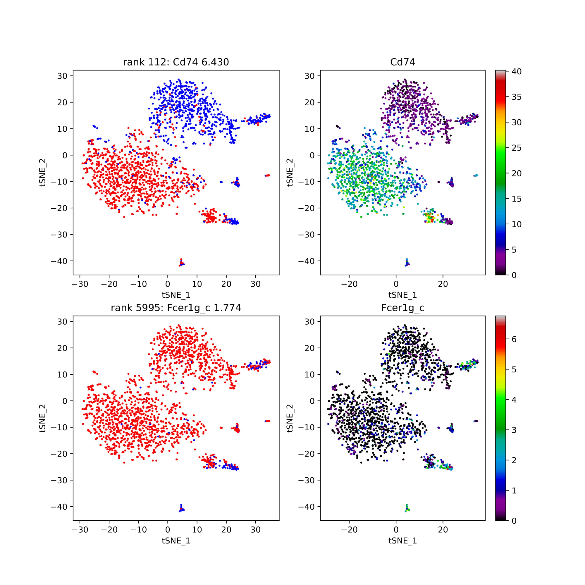

Output¶
Following is an example of COMET usage and output on the command line:
$ hgmd input/ output/
Started on 2018-11-01T22:55:15.243954
Reading data...
Generating complement data...
########
# Processing cluster 1...
########
Running t test on singletons...
Running XL-mHG on singletons...
Creating discrete expression matrix...
Finding pair expression matrix...
Running hypergeometric test on pairs...
Finding simple true positives/negatives for singletons...
Finding simple true positives/negatives for pairs...
Pickling data for later...
Exporting cluster 1 output to CSV...
Drawing plots...
Drawing discrete plots...
Drawing combined plots...
Drawing singleton combined plots...
Drawing true positive/negative plots...
########
# Processing cluster 2...
########
Running t test on singletons...
Running XL-mHG on singletons...
Creating discrete expression matrix...
Finding pair expression matrix...
Running hypergeometric test on pairs...
Finding simple true positives/negatives for singletons...
Finding simple true positives/negatives for pairs...
Pickling data for later...
Exporting cluster 2 output to CSV...
Drawing plots...
Drawing discrete plots...
Drawing combined plots...
Drawing singleton combined plots...
Drawing true positive/negative plots...
########
# Processing cluster 3...
########
Running t test on singletons...
Running XL-mHG on singletons...
Creating discrete expression matrix...
Finding pair expression matrix...
Running hypergeometric test on pairs...
Finding simple true positives/negatives for singletons...
Finding simple true positives/negatives for pairs...
Pickling data for later...
Exporting cluster 3 output to CSV...
Drawing plots...
Drawing discrete plots...
Drawing combined plots...
Drawing singleton combined plots...
Drawing true positive/negative plots...
Ended on 2018-11-01T22:56:28.103160
Following are examples of COMET output:
CSV pair output
Gives the gene-pairs ordered based on our ranking system of
statistical relevance. Column ‘rank’ gives the final rank of the pair
compared to the others. See our discussion in the manual for more info
on ranking and the various statistics calculated for each pair.

Singleton-only CSV output
Gives the single-gene marker list, ordered based on statistical relevance.

Combined continuous/discrete plots Gives the discrete and continuous plot for the single genes of the top performing pairs. 
Discrete plots comparing combinations/singletons Discrete only plots that show a pair of genes each. Gives a visualization of the discrete dual-expression alongside each single gene’s discrete expression.
Singleton-only combined plots Plots that show the discrete and continuous versio of the top performing single genes.
True positive/negative plot
True positive/ True negative values for the top gene pairs.

Singleton-only TP/TN plot true positive / True negatives values for the top single genes.